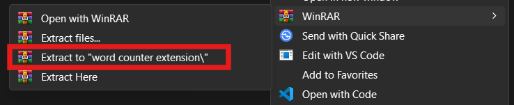
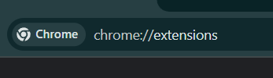
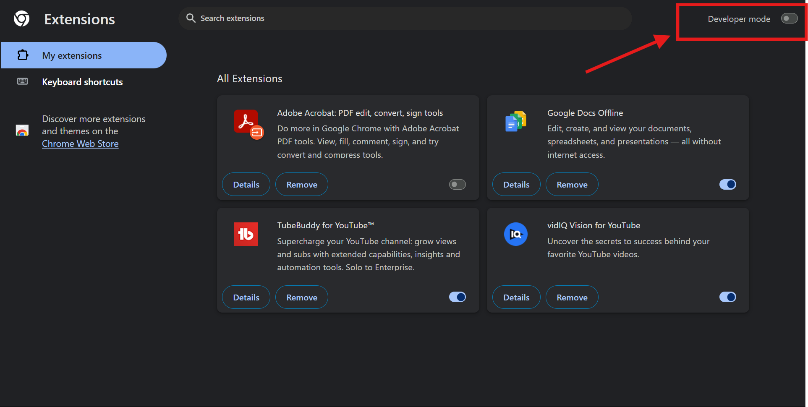
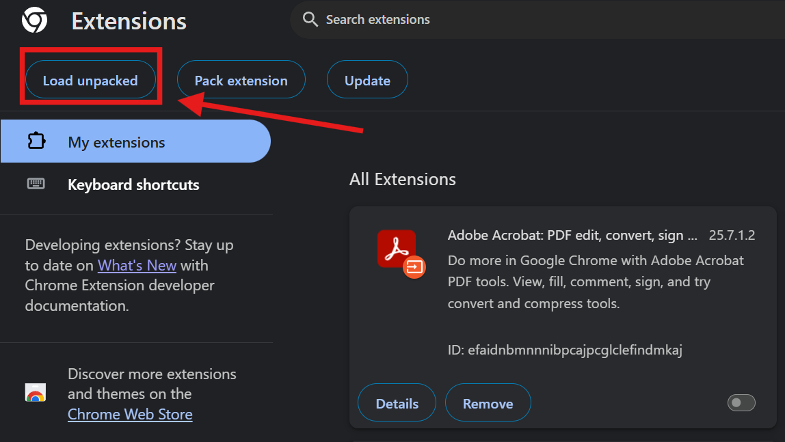
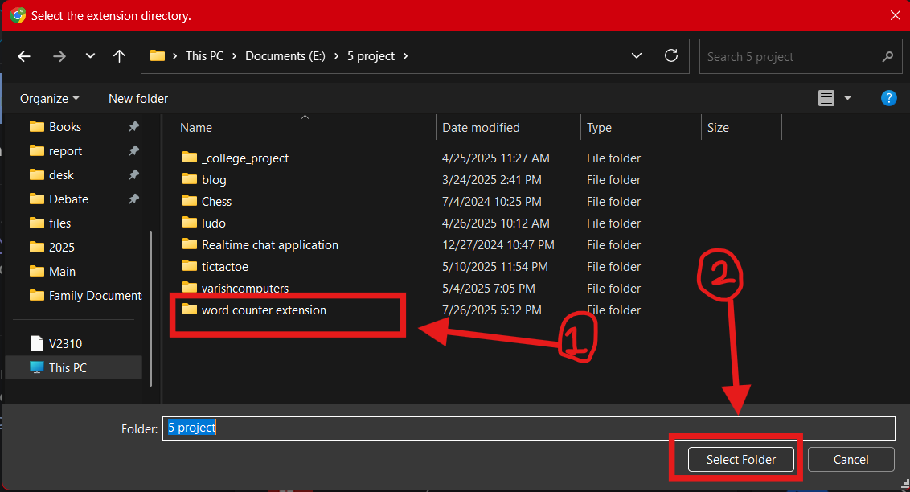
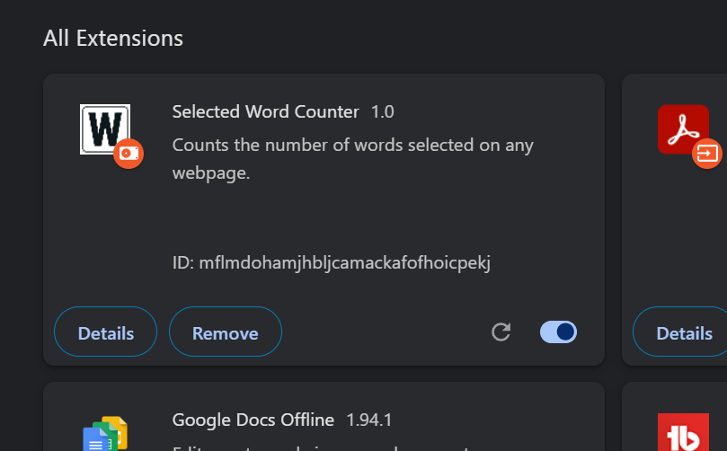
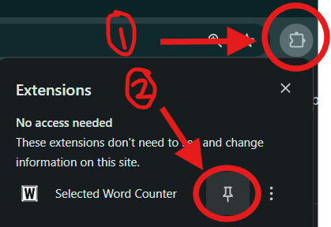

Word Counter Extension
Get the Chrome extension that counts words in real-time as you
select text on any webpage.
Download Extension (.zip)
Installation Instructions (Unpacked Extension)
Since this extension is hosted directly on GitHub and not the
Chrome Web Store, you'll need to follow a few manual steps to
install it in your Chrome browser.
-
Download the `.zip` file: Click the
"Download Extension (.zip)" button above. Chrome will
download the file to your "Downloads" folder and might show
a warning. Do NOT click "Discard" if
prompted; choose "Keep" or similar.
-
Extract the Zip File: Locate the downloaded
`word_counter_extension.zip` file in your "Downloads"
folder. **Right-click** on it and choose "Extract All,"
"Unzip," or a similar option to extract its contents into a
new folder (e.g., `word_counter_extension`). Remember where
you extract this folder.

-
Open Chrome Extensions Page: In your Chrome
browser, type
chrome://extensions into the
address bar and press Enter.

-
Enable Developer Mode: On the Chrome
Extensions page, locate the
"Developer mode" toggle switch in the
top-right corner of the page and turn it **ON**.

-
Load Unpacked Extension: Click the **"Load
unpacked"** button that appears. A file dialog will open.
Navigate to and **select the extracted
`word_counter_extension` folder** (the one containing
`manifest.json`), then click "Select Folder."

Browse file


-
Pin the Extension (Optional): For easy
access, click the puzzle piece icon (Extensions icon) in
your Chrome toolbar, find "Selected Word Counter," and click
the pin icon next to it.

Important Notes for Unpacked Extensions
-
**No Automatic Updates:** Extensions loaded via "Load
unpacked" do not receive automatic updates. If a new version
is released, you will need to download the new zip, extract
it, and re-load it using the "Load unpacked" button (you
might need to remove the old version first).
-
**Developer Mode:** Developer mode must remain enabled for
the extension to run. If you turn it off, the extension will
be disabled.